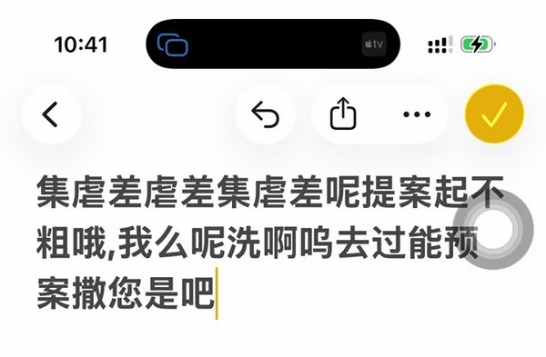
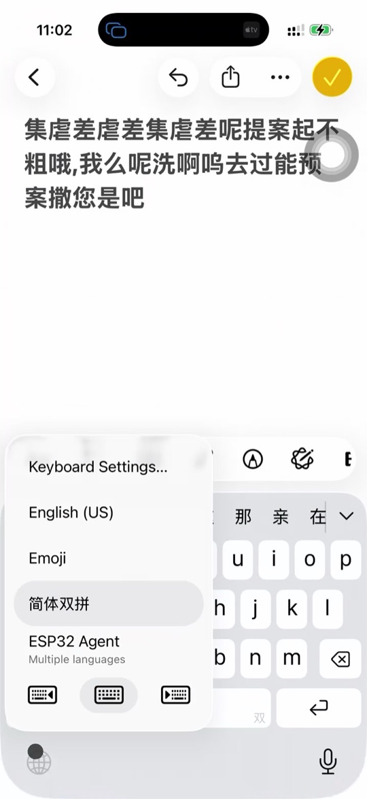
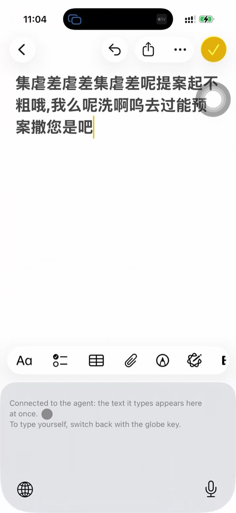
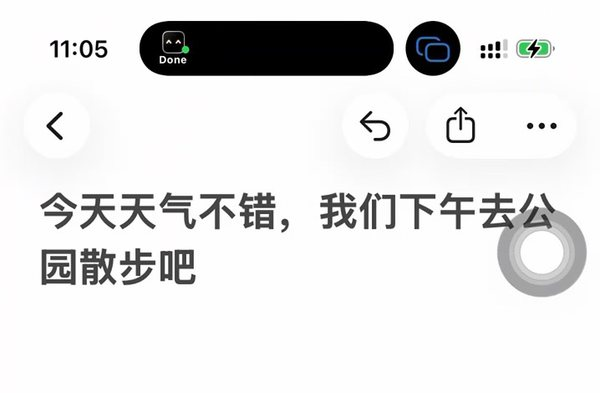

Chinese Input for ESP32 iPhone Agent: A Keyboard with No Keys
I had the idea of letting a model operate a real iPhone about a month ago, and then found a project that was almost exactly what I had in mind: ESP32 iPhone Agent1. It works like this: the phone mirrors its screen to a small ESP32-S3 board, an iOS app reads the picture and asks a vision model what to do next, and the board then acts on the phone as a mouse and keyboard.
The idea works, but I think speed is the bottleneck, and right now the usability is too poor. I tried a few things, and one important direction is making Chinese input faster, which is what this note is about: a keyboard with no keys for the agent, so it can put a whole text straight into the input field. I’ll write up the agent-side optimizations later.
The cost of typing Chinese key by key
To the phone, the board is a hardware keyboard, and all it can do is send keys. English is fine: one letter, one key. Chinese has to go through an input method: type the Pinyin, wait for the candidates, pick one so it is committed, then check that what was committed is the text you wanted. This comes with typing Chinese on the system keyboard at all, and has nothing to do with which input method the phone is set to. It is the same with the default full Pinyin.
Upstream’s HanTyper does exactly this. It types toneless full Pinyin. It first tries to type the whole sentence in one go and reads the screen once to check. The top candidate for a whole sentence is often not the sentence you wanted, and in that case it deletes it and types word by word, reading the screen every few words. The cost comes from two places:
- Keys: my test sentence is 17 characters, which is more than forty keys of Pinyin. The log has two inputs that only sent keys, with no read-back, and they took 4.0 and 4.6 seconds.
- Reading back: one screen read takes 1 to 2 seconds. When typing word by word, each word takes about 0.3 seconds, and the screen is read at least once every four words.
So even when everything goes well, one sentence takes several seconds, and longer sentences take longer. The clipboard is no help here either: the agent’s app is in the background while a task runs, and iOS refuses clipboard writes from a background app.
An extra problem when the input method is different
All of the above assumes the input method is the one the app expects. My test phone is an iPhone 17 on iOS 26.6, with the Chinese keyboard set to Xiaohe Shuangpin, and that adds another layer.
The task was “open Notes, create a new note, and type: 今天天气不错，我们下午去公园散步吧” (roughly “The weather is nice today, let’s take a walk in the park this afternoon”). One full attempt took about 22 seconds, and this is what came out:

The reason is simple. In Shuangpin, every syllable is two keys. In full Pinyin, tianqi (天气) is six keys. The Shuangpin keyboard cuts them into three syllables, ti, an and qi, and out comes “提案起”. bucuo (不错) becomes “不粗哦”, and women (我们) becomes “我么呢”. Of the nine words in the sentence, only “去” and “吧” came out right, because qu and ba are two keys each to begin with.
Worse, the app did not notice. The log records this step as “typed and read back”. The log also shows why: when HanTyper cannot read a word back, it treats the word as committed as long as its Pinyin letters are gone from the field (“not read back, but its pinyin is gone; taken as committed”). With Shuangpin the Pinyin letters were indeed gone. They had just turned into other characters.
The model saw in the screenshot that the text was wrong, cleared it and typed again. It retyped seven times with the same result every time, and after a bit more than five minutes I stopped the run by hand.
I would not call this an upstream bug: HanTyper assumes a full Pinyin keyboard, and my phone is set to Shuangpin. But users’ input method settings differ anyway, and an app can hardly support every one of them. As long as text is put together through an input method, every extra configuration is one more way to go wrong, and you often only find out after the first attempt has failed, and then spend time retyping.
The fix: a keyboard with no keys
Both problems come from the same place: all the agent wants is to put this text into the field, but all it has are keys, so it can only get there indirectly, through the input method. The better way is to skip the input method and insert the text directly. The proper way on iOS to insert text into another app’s field is a keyboard extension: textDocumentProxy.insertText on UIInputViewController.
I added a keyboard extension to the app, AgentKeyboard. It has no keys. Its UI is one line of status text and a globe key. The text is fed to it by the agent’s app over a socket inside the phone:
- The app listens for TCP on the loopback address (127.0.0.1), port 47613. The protocol is one JSON object per line.
- The keyboard connects when it starts and sends a heartbeat once a second. The app treats the keyboard as available only if it has heard a heartbeat in the last 2.5 seconds.
- Typing: the app sends an Insert with an id, the keyboard calls
insertTextonce to put the whole text into the current field, and answers with that id.
The whole protocol is two structs:
/// App → keyboard: insert `text` at the cursor.
struct Insert: Codable {
var id: Int
var text: String
}
/// Keyboard → app. With nothing set it is the once-a-second heartbeat; with `done` it answers
/// one Insert, and `ok` false means there was no field to insert into.
struct Note: Codable {
var done: Int?
var ok: Bool?
}On the keyboard side, only one line does the real work:
func insert(_ text: String) -> Bool {
guard isViewLoaded else { return false }
textDocumentProxy.insertText(text)
return true
}So there are no keys to send, no candidates to wait for and no word-by-word reading back, and it no longer matters whether the phone is set to full Pinyin or Shuangpin.
Why a socket and not an App Group: an app and its keyboard extension would normally talk through an App Group, but that needs a paid developer team, and I sign with a free personal team. A loopback socket only needs the keyboard to have “Allow Full Access” turned on. According to Apple’s documentation, a keyboard extension has no network access by default and cannot share a container with its containing app, and it gets both only with Full Access2. This choice has a price: other apps on the phone can connect to a loopback port too, so secrets such as passwords should not be typed this way.
When the keyboard is not there: with no heartbeat, typing falls back to the board sending keys, as before.
When the text was sent but no answer came back: the app waits 1.5 seconds, then reports the result as unconfirmed and tells the model to look at the field first: continue if the text is there, and retype only if it is not. That way the same text is not blindly typed twice.
An extra benefit and its cost
The benefit is that switching input methods is no longer a concern. When typing key by key, the app first has to work out whether the current keyboard is the Chinese one or the English one, and send Ctrl+Space to switch if it is the wrong one. English typed into a Pinyin keyboard comes out as uncommitted Pinyin. In a sentence that mixes Chinese and English, the first Chinese word after the English part needs another screen read to confirm the keyboard has not changed. Now type does not look at what language the text is in. It tries AgentKeyboard first, and English, mixed text and emoji all go through the same single insertText. On the key path, emoji were simply dropped.
To be clear about what was actually tested: English was tested on the device, with one 55-character sentence. Mixed Chinese and English was tested only on the simulator: 74 characters (Chinese plus a link), with the app in the background inserting into another app’s field, took 57 ms. Emoji were not tested.
The cost is that the field’s keyboard has to be switched to AgentKeyboard first. On the device this took 9.1 seconds, but it only has to happen once: iOS remembers the last keyboard used, unless someone switches away by hand. How to switch is the first pitfall below.
Pitfalls along the way
1. There is no way to switch straight to a given keyboard
This was the hardest part. With the keyboard installed and Full Access on, it still has to become the keyboard the field is currently using. Ctrl+Space from the board, or a tap on the globe key, only goes back and forth between the two most recently used system keyboards (English and Shuangpin on my phone) and never reaches a third-party keyboard. The keyboard extension cannot do it either: Apple’s documentation says there is no API for picking a particular keyboard to switch to2:1.
What works is what people do: long-press the globe key, wait for the menu, and tap the keyboard’s name. The app now does this itself:
- Use OCR to find the “123” key on screen; the globe key is right below it
- Move the pointer there, hold for one second, then release
- Read the screen again, find the “ESP32 Agent” row in the menu, and tap it


There is one more small catch here: the phone’s OCR read “ESP32” and “Agent” as two separate words, so looking for the name directly finds nothing. Adjacent words on the same row have to be joined before matching.
If the keyboard cannot be picked in the menu, the rest of that run’s typing goes through the board’s keys, and it does not try again.
2. Turning on Full Access restarts the app
When you turn on Full Access for the keyboard in Settings, iOS kills the containing app and starts it again. It is a one-time setting, but do it when no task is running.
3. Buttons in system alerts need two clicks
On this phone, buttons in system alerts ignore the pointer’s first click and only respond to the second. The current handling: if the screen has not changed after a retried click, click once more in the same place.
Results
Same task, same sentence, and this time the text in the field is right:

| Before: board keys (Shuangpin keyboard) | After: AgentKeyboard | |
|---|---|---|
| Typing these 17 characters | About 22 s per attempt, wrong text | 0.04 s, correct text |
| The whole task (open Notes, new note, type) | Retyped seven times, stopped by hand after more than 5 minutes | 37 s the first time, 28.1 s in a later run |
| One-off cost | None | Switching to AgentKeyboard, 9.1 s |
The typing step saves about 22 seconds per attempt. More importantly, the text used to come out wrong, and the task could not finish at all. Of the 37 seconds in the first run, about 16 went to clearing the wrong text that the earlier run had left in the note. The 28.1-second run did not have that step.
If the phone were set to full Pinyin, typing key by key should come out right. I have not tested that on this phone, so I have no direct comparison. Going by the costs above, this sentence needs more than 4 seconds for the keys alone, plus at least one read of 1 to 2 seconds, against 0.04 seconds now.
With typing down to 0.04 seconds, nearly all the remaining time in the task goes to model calls (about 4 to 8 seconds each in these two runs), and it has little to do with typing anymore.
Limits
- Small sample: tested on one phone only (iPhone 17, iOS 26.6), with one Chinese sentence and one English sentence, both in Notes.
- Bluetooth input mode only: the change was not tested with the board on USB input.
- Needs Full Access, and as said above, other apps can connect to the loopback port, so it is not suitable for secrets.
- It gets in the way of a person typing: while AgentKeyboard is the current keyboard, a person who taps a field sees an empty keyboard and has to tap the globe key to get back to their own.
- Password fields not tested: according to Apple’s documentation, third-party keyboards cannot be used in secure text fields, where the system temporarily swaps in the system keyboard. Phone pad fields are out too, and an app can refuse third-party keyboards altogether2:2. I have not tested whether the app correctly falls back to keys in these cases.
- Not tested in chat apps: I have not tried it in the input fields of apps like WeChat.
The upstream project did not have this as of commit 9b1d512, and as far as I know nobody had it working on this project before. I have not surveyed whether other projects do something similar.
Henry Yuan, ESP32 iPhone Agent, MIT License ↩︎
Apple, App Extension Programming Guide, the Custom Keyboard chapter. The document was last updated in 2017, and I have not verified each of its statements on iOS 26 ↩︎ ↩︎ ↩︎
让模型操作一台真的 iPhone，这个想法我一个月之前就有，后来发现已经有一个和我的想法几乎一样的项目了：ESP32 iPhone Agent1。它的原理是，手机把屏幕镜像给一块 ESP32-S3 小板子，iOS app 读画面、问视觉模型下一步做什么，板子再以鼠标和键盘的身份去操作手机。
这个想法能跑通，但我觉得瓶颈在速度上，目前的可用性太差了。我做了一些尝试，其中一个重要的方向是提升中文输入的速度，也就是这篇要写的：给 agent 做一个没有按键的键盘，让它把一整段文字直接放进输入框。agent 侧的优化方案后面再更新。
逐键输入中文的开销
板子在手机看来是一个硬件键盘，它能做的只有发按键。英文还好，一个字母一个键。中文就必须过输入法：把拼音敲进去，等候选词出来，选词上屏，再确认上屏的是不是想要的字。这是用系统键盘输入中文本身的特点，和手机上设的是哪种输入法没有关系，就算是默认的全拼也一样。
上游的 HanTyper 做的就是这件事。它打的是不带声调的全拼，先试着把整句一次打完，再读一次屏幕确认；整句的首选候选经常不是想要的那句话，不对的话就删掉，改成一个词一个词打，每隔几个词读一次屏幕。开销主要是两块：
- 敲键：我测试用的句子是 17 个字，拼音有四十多个键。日志里有两次只敲键、没有回读的输入，分别用了 4.0 秒和 4.6 秒。
- 回读：读一次屏幕要 1 到 2 秒。逐词打的时候，每个词大约 0.3 秒，最多每四个词就要读一次。
所以即使一切顺利，一句话也要好几秒，而且句子越长越慢。剪贴板在这里也用不上，因为 agent 的 app 跑任务的时候在后台，iOS 会拒绝后台 app 写剪贴板。
输入法不一样时的额外问题
上面说的还是输入法和 app 的假设一致的情况。我的测试机是 iPhone 17，iOS 26.6，中文键盘设的是小鹤双拼，这就多出来一层问题。
任务是“打开备忘录，新建一条备忘录，输入：今天天气不错，我们下午去公园散步吧”。结果完整打一遍要 22 秒左右，出来的是这个：
原因其实很简单，双拼是两个键一个音节。全拼的 tianqi 是六个键，被切成 ti、an、qi 三个音节，出来就是“提案起”；bucuo 变成“不粗哦”，women 变成“我么呢”。整句九个词里只有“去”和“吧”打对了，因为 qu 和 ba 本来就是两个键。
更麻烦的是 app 自己没有发现。日志里这一步记的是 typed and read back，也就是“打完了，也回读确认了”。看日志能看出来为什么：HanTyper 在回读不到某个词的时候，只要输入框里的拼音字母没了，就当它已经上屏（“not read back, but its pinyin is gone; taken as committed”）。双拼下拼音字母确实都没了，只是变成了别的字。
模型看截图发现文字不对，于是清空重打，前后重打了七次，每次结果都一样，5 分多钟之后我手动把这次 run 停掉了。
这不能算上游的 bug，HanTyper 假设的是全拼键盘，而我的手机设的是双拼。但用户的输入法设置本来就各不相同，app 很难每一种都适配。只要还是通过输入法去凑字，每多一种配置就多一种出错的方式，而且往往是第一次打错了才发现，再花时间重打。
方案：一个没有按键的键盘
这两个问题其实是同一个来源：agent 想做的只是“把这段文字放进输入框”，但它手里只有按键，只能通过输入法间接地去凑。所以更合适的做法是跳过输入法，直接插入文字。iOS 上能往别的 app 的输入框里插入文字的正规途径，就是键盘扩展：UIInputViewController 的 textDocumentProxy.insertText。
我给 app 加了一个键盘扩展 AgentKeyboard。它没有按键，界面上只有一行状态文字和一个地球键。文字由 agent 的 app 通过手机内部的一个 socket 喂给它：
- App 这边：在 loopback 地址（127.0.0.1）的 47613 端口上监听 TCP，协议是一行一个 JSON。
- 键盘这边：启动后连上来，每秒发一次心跳。App 只有在最近 2.5 秒内听到过心跳，才认为键盘可用。
- 输入：app 发一条带 id 的 Insert，键盘调用一次
insertText把整段文字放进当前的输入框，再按 id 回一条确认。
整个协议就是两个结构体：
/// App → keyboard: insert `text` at the cursor.
struct Insert: Codable {
var id: Int
var text: String
}
/// Keyboard → app. 什么都不带是每秒一次的心跳；带 `done` 是对某次 Insert 的回答，
/// `ok` 为 false 表示没有可以插入的输入框。
struct Note: Codable {
var done: Int?
var ok: Bool?
}键盘这边真正干活的只有一行：
func insert(_ text: String) -> Bool {
guard isViewLoaded else { return false }
textDocumentProxy.insertText(text)
return true
}这样就不需要敲键，不需要等候选词，也不需要逐词回读，手机上设的是全拼还是双拼也无所谓了。
为什么用 socket 而不是 App Group：app 和它的键盘扩展之间通信，一般会用 App Group，但 App Group 需要付费的开发者 team，而我是用免费的 personal team 签名的。Loopback socket 只需要键盘打开“允许完全访问”（Full Access）。按 Apple 的文档，键盘扩展默认没有网络访问，也不能和 containing app 共享容器，打开 Full Access 之后才有2。这个选择是有代价的：loopback 端口手机上的其他 app 也能连，所以不应该用这条路输入密码之类的 secret。
键盘不在的时候：没听到心跳，就退回到板子逐键输入，和原来一样。
发出去了但没收到确认的时候：app 等 1.5 秒，等不到就把结果报成 unconfirmed，并告诉模型先看一眼输入框，文字在就继续，不在再重打。这样同一段文字不会被盲打两遍。
额外的好处和开销
好处是不用再管输入法的切换了。逐键输入的时候，打字之前要先弄清楚当前是中文键盘还是英文键盘，不对就发 Ctrl+Space 切过去；英文打进拼音键盘，出来的是没上屏的拼音；中英混合的句子，英文后面的第一个中文词还要再读一次屏幕，确认键盘没有变。现在 type 不看文字是什么语言，都先走 AgentKeyboard，英文、中英混合、emoji 是同一次 insertText。逐键的时候 emoji 是直接被丢掉的。
这里实测的范围要说清楚：英文在真机上测过一句 55 个字符的；中英混合只在模拟器上测过，74 个字符（中文加一个链接），app 在后台，插入另一个 app 的输入框，用了 57 毫秒；emoji 没有测过。
开销是要先把输入框的键盘切成 AgentKeyboard。这件事在真机上用了 9.1 秒，但只需要做一次，iOS 会记住最后用的键盘，除非中间有人手动切走。怎么切是下面的第一个坑。
中间遇到的坑
1. 没办法直接切到指定的键盘
这是最费劲的部分。键盘装好、Full Access 也开了之后，还得让它成为输入框当前用的那个键盘。板子发 Ctrl+Space，或者点一下地球键，都只会在最近用过的两个系统键盘之间来回切（我这里是英文和双拼），永远切不到第三方键盘。键盘扩展自己也没有办法，Apple 的文档里写了，没有 API 可以指定切到某一个键盘2:1。
管用的办法是人平时用的那个：长按地球键，等菜单弹出来，再点键盘的名字。现在 app 自己会做这件事：
- 用 OCR 在屏幕上找到“123”键，地球键就在它的正下方
- 把指针移过去，按住一秒再松开
- 再读一次屏幕，在弹出的菜单里找到“ESP32 Agent”那一行，点它
这里还有一个小坑：手机的 OCR 把“ESP32”和“Agent”读成了两个独立的词，直接按名字找是找不到的，所以要先把同一行上相邻的词拼起来再匹配。
如果菜单里选不到，这次 run 剩下的输入就都走板子逐键，不会再试。
2. 打开 Full Access 会重启 app
在设置里给键盘打开 Full Access 的时候，iOS 会把 containing app 杀掉再重新启动。这个设置只需要做一次，但要避开有任务在跑的时候。
3. 系统弹窗的按钮要点两次
在这台手机上，系统弹窗的按钮不理会指针的第一次点击，第二次才生效。现在的处理是：一次重试的点击之后如果画面没有变化，就在原地再点一下。
结果
同一个任务，同一句话，这次输入框里是对的：
| 之前：板子逐键（双拼键盘） | 之后：AgentKeyboard | |
|---|---|---|
| 输入这 17 个字 | 每次约 22 秒，内容是错的 | 0.04 秒，内容正确 |
| 整个任务（打开备忘录、新建、输入） | 重打七次，5 分多钟后手动停止 | 第一次 37 秒完成，后来一次 28.1 秒 |
| 一次性的开销 | 无 | 切到 AgentKeyboard，9.1 秒 |
输入这一步，每次省下来 22 秒左右，更重要的是之前打出来的字是错的，任务根本完成不了。第一次的 37 秒里，有大约 16 秒其实是在清掉上一次留在备忘录里的错字，28.1 秒那次没有这一步。
如果手机设的是全拼，逐键输入应该是能打对的，这种情况我没有在这台手机上测过，所以没有直接的对比数字。按前面的开销算，这句话光敲键就要 4 秒多，还要加上至少一次 1 到 2 秒的回读，现在是 0.04 秒。
输入本身降到 0.04 秒之后，任务剩下的时间基本都花在模型调用上（这两次 run 里每次调用大约 4 到 8 秒），和输入已经没什么关系了。
限制
- 样本很小：只在一台手机上测过（iPhone 17，iOS 26.6），一句中文、一句英文，都是在备忘录里。
- 只测了蓝牙输入模式：板子用 USB 输入的时候，这个改动没有测过。
- 需要 Full Access，而且前面说了，loopback 端口其他 app 也能连，不适合输入 secret。
- 人自己打字会受影响：AgentKeyboard 是当前键盘的时候，人点开输入框看到的是一个空键盘，要点地球键切回原来的键盘。
- 密码框没有测：按 Apple 的文档，第三方键盘不能用在 secure text field 里，系统会临时换回系统键盘；phone pad 类型的输入框也不行，app 还可以整体拒绝第三方键盘2:2。这些情况下 app 能不能正确地退回逐键输入，我没有测过。
- 聊天 app 里没有测：微信这类 app 的输入框里还没试过。
上游项目在 commit 9b1d512 的时候没有这个功能，据我所知这个项目上之前也没有人做出来过。其他项目里有没有类似的做法，我没有调研过。
Henry Yuan，ESP32 iPhone Agent，MIT 许可证 ↩︎
Apple，App Extension Programming Guide 的 Custom Keyboard 一章。这份文档最后更新于 2017 年，里面的说法我没有在 iOS 26 上逐条验证 ↩︎ ↩︎ ↩︎